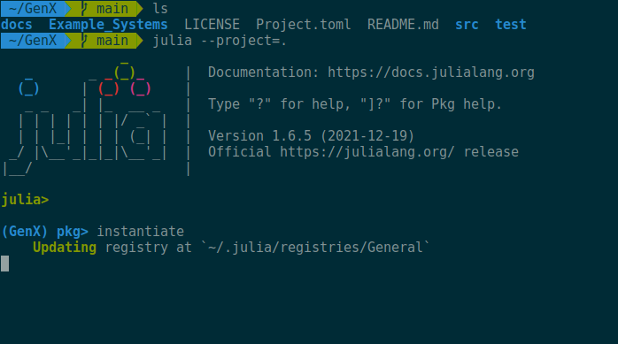
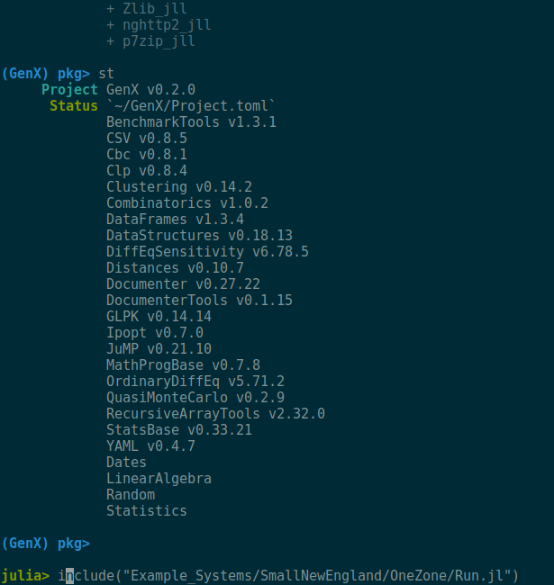

Installation Guide
This guide will walk you through the steps to install Julia, the GenX package, and the required dependencies to run GenX.
Installing Julia
GenX currently exists in version 0.4.0 and runs only on Julia v1.6.x, 1.7.x, 1.8.x, and 1.9.x, where x>=0 and a minimum version of JuMP v1.1.1. To install Julia, please follow the instructions on the Julia website.
We recommend the users to stick to a particular version of Julia to run GenX. If however, the users decide to switch between versions, it's very important to delete the old Manifest.toml file and do a fresh build of GenX.
Downloading GenX and installing dependencies
After installing Julia, you can download GenX by either cloning the repository or downloading the zip file from the GenX GitHub page. For this tutorial it will be assumed to be within your home directory: /home/youruser/GenX. Once you have downloaded GenX, you can install the dependencies by following the steps below:
1. Start a terminal and navigate into the GenX folder.
2. Type julia --project=. to start an instance of the julia kernel with the project set to the current folder. The flag --project=. indicates that Julia will activate the project environment using the Project.toml present in the current folder, .. If running on Windows, the location of Julia can also be specified as e.g., C:\julia-1.6.0\bin\julia.exe --project=..
The file Project.toml in the parent directory lists all of the dependencies and their versions needed to run GenX. You can see all of the packages installed in your Julia environment and their version numbers by running pkg> status or pkg> st on the package manager command line in the Jula REPL (for more information on the Julia package manager, read the documentation for the Pkg.jl or for the Julia standard library).
julia --project is a shortcut for julia --project=.
3. Type ] to bring up the package system (GenX) pkg > prompt. This indicates that the GenX project was detected.
If you see (@v1.6) pkg> as the prompt, then the project was not successfully set.
4. Type instantiate from the (GenX) pkg prompt.
On Windows there is an issue with the prepopulated MUMPS_seq_jll v5.5.1 that prevents compilation of the solvers. To avoid this issue type add MUMPS_seq_jll@5.4.1 after running instantiate.
5. Type st to check that the dependecies have been installed. If there is no error, it has been successful.
Type the back key to come back to the julia> prompt from the package manager.
The above steps are shown in Figure 1 and Figure 2.
 Figure 1. Creating the Julia environment and installing dependencies from Project.toml file from inside the GenX folder.
 Figure 2. Creating the Julia environment and installing dependencies from Project.toml file from inside the GenX folder: Step 5
Installing solvers
GenX requires a solver to be installed to solve the optimization problem. By default, GenX uses one of the following open-source freely available solvers:
- HiGHS for linear programming and MILP (default solver)
- Clp for linear programming (LP) problems
- Cbc for mixed integer linear programming (MILP) problems
We also provide the option to use one of these two commercial solvers:
Using Gurobi and CPLEX requires a valid license on the host machine.
Notes on previous versions of GenX
For those users who has previously cloned GenX, and has been running it successfully so far, and therefore might be unwilling to run it on the latest version of Julia: please look into the GitHub branch, old_version.